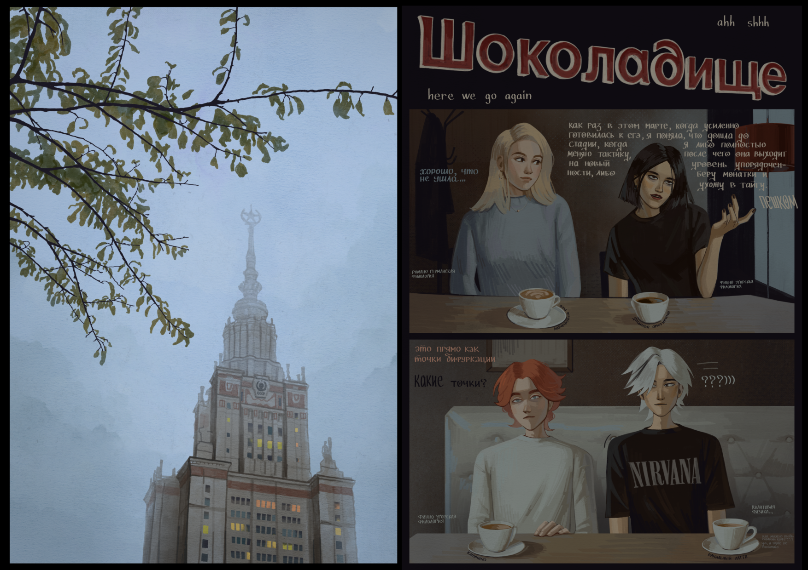

the dump
Mir reveals the conflict between the rational and fatalistic sides of a single personality. School-project comic, published in a limited print run in 2024.

Mir reveals the conflict between the rational and fatalistic sides of a single personality. School-project comic, published in a limited print run in 2024.
